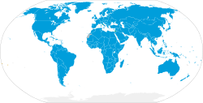

United Nations
|  | |||||||
| Headquarters | 760 United Nations Plaza, Manhattan, New York City, (international zone) | ||||||
| Largest city | Tokyo, Japan | ||||||
| Official languages | |||||||
| Type | Intergovernmental organization | ||||||
| Membership | 193 member states 2 observer states | ||||||
| Leaders | |||||||
| António Guterres | |||||||
| Amina J. Mohammed | |||||||
| Dennis Francis | |||||||
| Bob Rae | |||||||
| Establishment | |||||||
• UN Charter signed | 26 June 1945 | ||||||
• Charter entered into force | 24 October 1945 | ||||||
| |||||||
{kind=link}
{kind=link}
.svg){kind=link}
The United Nations (UN) is a diplomatic and political[2] international organization with the intended purpose of maintaining international peace and security, developing friendly relations among nations, achieving international cooperation, and serving as a center for coordinating the actions of member nations.[3] It is widely recognised as the world's largest international organization.[4] The UN is headquartered in New York City, in international territory with certain privileges extraterritorial to the United States, and the UN has other offices in Geneva, Nairobi, Vienna, and The Hague, where the International Court of Justice is headquartered at the Peace Palace.
The UN was established after World War II with the aim of preventing future world wars, and succeeded the League of Nations, which was characterized as being ineffective.[5] On 25 April 1945, 50 nations assembled in San Francisco, California for a conference and initialised the drafting of the UN Charter, which was adopted on 25 June 1945. The charter took effect on 24 October 1945, when the UN began operations. The UN's objectives, as outlined by its charter, include maintaining international peace and security, protecting human rights, delivering humanitarian aid, promoting sustainable development, and upholding international law.[6] At its founding, the UN had 51 member states; as of 2024[update], it has 193 sovereign states, nearly all of the world's recognized sovereign states.[7]
The UN's mission to preserve world peace was complicated in its initial decades due in part to Cold War tensions that existed between the United States and Soviet Union and their respective allies. Its mission has included the provision of primarily unarmed military observers and lightly armed troops charged with primarily monitoring, reporting and confidence-building roles.[8] UN membership grew significantly following the widespread decolonization in the 1960s. Since then, 80 former colonies have gained independence, including 11 trust territories that had been monitored by the Trusteeship Council.[9] By the 1970s, the UN's budget for economic and social development programmes vastly exceeded its spending on peacekeeping. After the end of the Cold War in 1991, the UN shifted and expanded its field operations, undertaking a wide variety of complex tasks.[8]
The UN comprises six principal operational organizations: the General Assembly, the Security Council, the Economic and Social Council, the International Court of Justice, the UN Secretariat, and the Trusteeship Council, although the Trusteeship Council has been suspended since 1994. The UN System includes a multitude of specialized agencies, funds, and programmes, including the World Bank Group, the World Health Organization, the World Food Programme, UNESCO, and UNICEF. Additionally, non-governmental organizations may be granted consultative status with the Economic and Social Council and other agencies.
The UN's chief administrative officer is the secretary-general, currently António Guterres who is a Portuguese politician and diplomat. He began his first five year-term on 1 January 2017 and was re-elected on 8 June 2021. The organization is financed by assessed and voluntary contributions from its member states.
The UN, its officers, and its agencies have won multiple Nobel Peace Prizes, although other evaluations of its effectiveness have been contentious. Some commentators believe the organization to be a leader in peace and human development, while others have criticized it for ineffectiveness, bias, and corruption.
History
Background (pre-1941)
{kind=link}
In the century prior to the UN's creation, several international organizations such as the International Committee of the Red Cross were formed to ensure protection and assistance for victims of armed conflict and strife.[10]
During World War I, several major leaders, especially U.S. President Woodrow Wilson, advocated for a world body to guarantee peace. The winners of the war, the Allies, met to decide on formal peace terms at the Paris Peace Conference. The League of Nations was approved, and started operations, but the United States never joined. On 10 January 1920, the League of Nations formally came into being when the Covenant of the League of Nations, ratified by 42 nations in 1919, took effect.[11] The League Council acted as an executive body directing the Assembly's business. It began with four permanent members—the United Kingdom, France, Italy, and Japan.
After some limited successes and failures during the 1920s, the League proved ineffective in the 1930s, as it failed to act against the Japanese invasion of Manchuria in 1933. Forty nations voted for Japan to withdraw from Manchuria but Japan voted against it and walked out of the League instead of withdrawing from Manchuria.[12] It also failed to act against the Second Italo-Ethiopian War, after the appeal for international intervention by Ethiopian Emperor Haile Selassie I at Geneva in 1936 went with no avail, including when calls for economic sanctions against Italy failed. Italy and other nations left the League.[13]
When war broke out in 1939, the League effectively closed down.[14]
Declarations by the Allies of World War II (1941–1944)
{kind=link}
The first step towards the establishment of the United Nations was the Inter-Allied Conference in London that led to the Declaration of St James's Palace on 12 June 1941.[15][16] By August 1941, American President Franklin Roosevelt and British Prime Minister Winston Churchill had drafted the Atlantic Charter; which defined goals for the post-war world. At the subsequent meeting of the Inter-Allied Council in London on 24 September 1941, the eight governments in exile of countries under Axis occupation, together with the Soviet Union and representatives of the Free French Forces, unanimously adopted adherence to the common principles of policy set forth by Britain and the United States.[17][18]
Roosevelt and Churchill met at the White House in December 1941 for the Arcadia Conference. Roosevelt, considered a founder of the UN,[19][20] coined the term United Nations to describe the Allied countries. [21] Purportedly, when Roosevelt went to Churchill's room to inform him of the name "United Nations", he found Churchill stark naked.[22][23] Churchill accepted it, noting its use by Lord Byron.[24] The text of the Declaration by United Nations was drafted on 29 December 1941, by Roosevelt, Churchill, and Harry Hopkins. It incorporated Soviet suggestions but included no role for France. One major change from the Atlantic Charter was the addition of a provision for religious freedom, which Stalin approved after Roosevelt insisted.[25][26]
Roosevelt's idea of the "Four Powers", referring to the four major Allied countries, the United States, the United Kingdom, the Soviet Union, and China, emerged in the Declaration by the United Nations.[27] On New Year's Day 1942, Roosevelt, Churchill, the Soviet Union's former Foreign Minister Maxim Litvinov, and the Chinese Premier T. V. Soong signed the "Declaration by United Nations",[28] and the next day the representatives of twenty-two other nations added their signatures. During the war, the United Nations became the official term for the Allies. In order to join, countries had to sign the Declaration and declare war on the Axis powers.[29]
The October 1943 Moscow Conference resulted in the Moscow Declarations, including the Four Power Declaration on General Security which aimed for the creation "at the earliest possible date of a general international organization". This was the first public announcement that a new international organization was being contemplated to replace the League of Nations. The Tehran Conference followed shortly afterwards at which Roosevelt, Churchill and Joseph Stalin, the leader of the Soviet Union, met and discussed the idea of a post-war international organization.
The new international organisation was formulated and negotiated amongst the delegations from the Allied Big Four at the Dumbarton Oaks Conference from 21 September to 7 October 1944. They agreed on proposals for the aims, structure and functioning of the new organization.[30][31][32] It took the conference at Yalta in February 1945, and further negotiations with the Soviet Union, before all the issues were resolved.[33]
Founding (1945)
{kind=link}
By 1 March 1945, 21 additional states had signed the Declaration by the United Nations.[34] After months of planning, the UN Conference on International Organization opened in San Francisco on 25 April 1945. It was attended by 50 nations' governments and a number of non-governmental organizations.[35][36][37] The delegations of the Big Four chaired the plenary meetings.[38] Previously, Churchill had urged Roosevelt to restore France to its status of a major power after the liberation of Paris in August 1944. The drafting of the Charter of the United Nations was completed over the following two months, and it was signed on 26 June 1945 by the representatives of the 50 countries.[39][40] The UN officially came into existence on 24 October 1945, upon ratification of the Charter by the five permanent members of the Security Council: the United States, the United Kingdom, France, the Soviet Union and China — and by a majority of the other 46 nations.[41]
The first meetings of the General Assembly, with 51 nations represented,[a] and the Security Council took place in London beginning in January 1946.[41] Debates began at once, covering topical issues such as the presence of Russian troops in Iranian Azerbaijan and British forces in Greece.[44] British diplomat Gladwyn Jebb served as interim secretary-general.
The General Assembly selected New York City as the site for the headquarters of the UN. Construction began on 14 September 1948 and the facility was completed on 9 October 1952. The Norwegian Foreign Minister, Trygve Lie, was elected as the first UN secretary-general (Jebb was only in the position until a permanent secretary-general was elected).[41]
Cold War (1947–1991)
{kind=link}
Though the UN's primary mandate was peacekeeping, the division between the United States and the Soviet Union often paralysed the organization; generally allowing it to intervene only in conflicts distant from the Cold War.[45] Two notable exceptions were a Security Council resolution on 7 July 1950 authorizing a US-led coalition to repel the North Korean invasion of South Korea, passed in the absence of the Soviet Union,[41][46] and the signing of the Korean Armistice Agreement on 27 July 1953.[47]
On 29 November 1947, the General Assembly approved a resolution to partition Palestine, approving the creation of Israel.[48] Two years later, Ralph Bunche, a UN official, negotiated an armistice to the resulting conflict.[49] On 7 November 1956, the first UN peacekeeping force was established to end the Suez Crisis;[50] however, the UN was unable to intervene against the Soviet Union's simultaneous invasion of Hungary, following the country's revolution.[51]
On 14 July 1960, the UN established the United Nations Operation in the Congo (or UNOC), the largest military force of its early decades, to bring order to Katanga, restoring it to the control of the Democratic Republic of the Congo by 11 May 1964.[52] While travelling to meet rebel leader Moise Tshombe during the conflict, Dag Hammarskjöld, often named as one of the UN's most effective secretaries-general,[53] died in a plane crash. Months later he was posthumously awarded the Nobel Peace Prize.[54] In 1964, Hammarskjöld's successor, U Thant, deployed the UN Peacekeeping Force in Cyprus, which would become one of the UN's longest-running peacekeeping missions.[55]
With the spread of decolonization in the 1960s, the UN's membership shot up due to an influx of newly independent nations. In 1960 alone, 17 new states joined the UN, 16 of them from Africa.[50] On 25 October 1971, with opposition from the United States, but with the support of many Third World nations, the People's Republic of China was given the Chinese seat on the Security Council in place of the Republic of China (also known as Taiwan). The vote was widely seen as a sign of waning American influence in the organization.[56] Third World nations organized themselves into the Group of 77 under the leadership of Algeria, which briefly became a dominant power at the UN.[57] On 10 November 1975, a bloc comprising the Soviet Union and Third World nations passed a resolution, over strenuous American and Israeli opposition, declaring Zionism to be a form of racism. The resolution was repealed on 16 December 1991, shortly after the end of the Cold War.[58][59]
With an increasing Third World presence and the failure of UN mediation in conflicts in the Middle East, Vietnam, and Kashmir, the UN increasingly shifted its attention to its secondary goals of economic development and cultural exchange.[60] By the 1970s, the UN budget for social and economic development was far greater than its peacekeeping budget.
Post-Cold War (1991–present)
.jpg){kind=link}
{kind=link}
{kind=link}
After the Cold War, the UN saw a radical expansion in its peacekeeping duties, taking on more missions in five years than it had in the previous four decades.[61] Between 1988 and 2000, the number of adopted Security Council resolutions more than doubled, and the peacekeeping budget increased by more than tenfold.[62][63][64] The UN negotiated an end to the Salvadoran Civil War, launched a successful peacekeeping mission in Namibia, and oversaw democratic elections in post-apartheid South Africa and post-Khmer Rouge Cambodia.[65] In 1991, the UN authorized a US-led coalition that repulsed Iraq's invasion of Kuwait.[66] Brian Urquhart, the under-secretary-general of the UN from 1971 to 1985, later described the hopes raised by these successes as a "false renaissance" for the organization, given the more troubled missions that followed.[67]
Beginning in the last decades of the Cold War, critics of the UN condemned the organization for perceived mismanagement and corruption.[68] In 1984, American President Ronald Reagan withdrew the United States' funding from the United Nations Educational, Scientific and Cultural Organisation (or UNESCO) over allegations of mismanagement, followed by the United Kingdom and Singapore.[69][70] Boutros Boutros-Ghali, the secretary-general from 1992 to 1996, initiated a reform of the Secretariat, somewhat reducing the size of the organisation.[71][72] His successor, Kofi Annan, initiated further management reforms in the face of threats from the US to withhold its UN dues.[72]
Though the UN Charter had been written primarily to prevent aggression by one nation against another, in the early 1990s the UN faced several simultaneous, serious crises within Somalia, Haiti, Mozambique, and the nations that previously made up Yugoslavia.[73] The UN mission in Somalia was widely viewed as a failure after the United States' withdrawal following casualties in the Battle of Mogadishu. The UN mission to Bosnia faced worldwide ridicule for its indecisive and confused mission in the face of ethnic cleansing.[74] In 1994, the UN Assistance Mission for Rwanda failed to intervene in the Rwandan genocide amidst indecision in the Security Council.[75]
From the late 1990s to the early 2000s, international interventions authorized by the UN took a wider variety of forms. The United Nations Security Council Resolution 1244 authorised the NATO-led Kosovo Force beginning in 1999. The UN mission in the Sierra Leone Civil War was supplemented by a British military intervention. The invasion of Afghanistan in 2001 was overseen by NATO.[76] In 2003, the United States invaded Iraq despite failing to pass a UN Security Council resolution for authorization, prompting a new round of questioning of the UN's effectiveness.[77]
Under the eighth secretary-general, Ban Ki-moon, the UN intervened with peacekeepers in crises such as the War in Darfur in Sudan and the Kivu conflict in the Democratic Republic of the Congo and sent observers and chemical weapons inspectors to the Syrian Civil War.[78] In 2013, an internal review of UN actions in the final battles of the Sri Lankan Civil War in 2009 concluded that the organization had suffered a "systemic failure".[79] In 2010, the organization suffered the worst loss of life in its history, when 101 personnel died in the Haiti earthquake.[80] Acting under the United Nations Security Council Resolution 1973 in 2011, NATO countries intervened in the First Libyan Civil War.
The Millennium Summit was held in 2000 to discuss the UN's role in the 21st century.[81] The three-day meeting was the largest gathering of world leaders in history, and it culminated in the adoption by all member states of the Millennium Development Goals (or MDGs), a commitment to achieve international development in areas such as poverty reduction, gender equality and public health. Progress towards these goals, which were to be met by 2015, was ultimately uneven. The 2005 World Summit reaffirmed the UN's focus on promoting development, peacekeeping, human rights and global security.[82] The Sustainable Development Goals (or SDGs) were launched in 2015 to succeed the Millennium Development Goals.[83]
In addition to addressing global challenges, the UN has sought to improve its accountability and democratic legitimacy by engaging more with civil society and fostering a global constituency.[84] In an effort to enhance transparency, in 2016 the organization held its first public debate between candidates for secretary-general.[85] On 1 January 2017, Portuguese diplomat António Guterres, who had previously served as the UN High Commissioner for Refugees, became the ninth secretary-general. Guterres has highlighted several key goals for his administration, including an emphasis on diplomacy for preventing conflicts, more effective peacekeeping efforts, and streamlining the organization to be more responsive and versatile to international needs.[86]
On 13 June 2019, the UN signed a Strategic Partnership Framework with the World Economic Forum in order to "jointly accelerate" the implementation of the 2030 Agenda for Sustainable Development.[87]
Structure
The United Nations is part of the broader UN System, which includes an extensive network of institutions and entities. Central to the organization are five principal organs established by the UN Charter: the General Assembly, the Security Council, the Economic and Social Council, the International Court of Justice and the UN Secretariat.[88] A sixth principal organ, the Trusteeship Council, suspended its operations on 1 November 1994 upon the independence of Palau; the last remaining UN trustee territory.[89]
Four of the five principal organs are located at the main UN Headquarters in New York City, while the International Court of Justice is seated in The Hague.[90] Most other major agencies are based in the UN offices at Geneva,[91] Vienna,[92] and Nairobi,[93] and additional UN institutions are located throughout the world. The six official languages of the UN, used in intergovernmental meetings and documents, are Arabic, Chinese, English, French, Russian and Spanish.[94] On the basis of the Convention on the Privileges and Immunities of the United Nations, the UN and its agencies are immune from the laws of the countries where they operate, safeguarding the UN's impartiality with regard to host and member countries.[95]
Below the six organs are, in the words of the author Linda Fasulo, "an amazing collection of entities and organizations, some of which are actually older than the UN itself and operate with almost complete independence from it".[96] These include specialized agencies, research and training institutions, programmes and funds and other UN entities.[97]
All organizations in the UN system obey the Noblemaire principle, which calls for salaries that will attract and retain citizens of countries where compensation is highest, and which ensures equal pay for work of equal value regardless of the employee's nationality.[98][99] In practice, the International Civil Service Commission, which governs the conditions of UN personnel, takes reference to the highest-paying national civil service.[100] Staff salaries are subject to an internal tax that is administered by the UN organizations.[98][101]
| UN General Assembly — Deliberative assembly of all UN member states — |
UN Secretariat — Administrative organ of the UN — |
International Court of Justice — Universal court for international law — | ||||
|
|
| ||||
| UN Security Council — For international security issues — |
UN Economic and Social Council — For global economic and social affairs — |
UN Trusteeship Council — For administering trust territories (currently inactive) — | ||||
|
|
| ||||
{kind=link}
{kind=link}
{kind=link}
{kind=link}
{kind=link}
{kind=link}
General Assembly

The General Assembly is the primary deliberative assembly of the UN. Composed of all UN member states, the assembly gathers at annual sessions at the General Assembly Hall, but emergency sessions can be summoned.[103] The assembly is led by a president, elected by the member states on a rotating regional basis, and 21 vice-presidents.[104] The first session convened on 10 January 1946 in the Methodist Central Hall in London and comprised representatives of 51 nations.[41]
When the General Assembly decides on seminal questions such as those on peace and security, admission of new members and budgetary matters, a two-thirds majority of those present and voting is required.[105][106] All other questions are decided by a majority vote. Each member has one vote. Apart from the approval of budgetary matters, resolutions are not binding on the members. The Assembly may make recommendations on any matters within the scope of the UN, except matters of peace and security that are under consideration by the Security Council.[103]
Draft resolutions can be forwarded to the General Assembly by its six main committees:[107]
- First Committee (Disarmament and International Security)
- Second Committee (Economic and Financial)
- Third Committee (Social, Humanitarian, and Cultural)
- Fourth Committee (Special Political and Decolonization)
- Fifth Committee (Administrative and Budgetary)
- Sixth Committee (Legal)
As well as by the following two committees:
- General Committee – a supervisory committee consisting of the assembly's president, vice-presidents, and committee heads
- Credentials Committee – responsible for determining the credentials of each member nation's UN representatives
Security Council
{kind=link}
The Security Council is charged with maintaining peace and security amongst nations. While other organs of the UN can only make recommendations to member states, the Security Council has the power to make binding decisions that member states have agreed to carry out, under the terms of Charter Article 25.[108] The decisions of the council are known as United Nations Security Council resolutions.[109]
The Security Council is made up of fifteen member states: five permanent members (China, France, Russia, the United Kingdom and the United States) and ten non-permanent members (currently Algeria, Ecuador, Guyana, Japan, Malta, Mozambique, the Republic of Korea, Sierra Leone, Slovenia and Switzerland).[110] The five permanent members hold veto power over UN resolutions, allowing a permanent member to block adoption of a resolution, though not debate. The ten temporary seats are held for two-year terms, with five members elected each year by the General Assembly on a regional basis.[111] The presidency of the Security Council rotates alphabetically each month.[112]
UN Secretariat
{kind=link}
The UN Secretariat carries out the day-to-day duties required to operate and maintain the UN system.[113] It is composed of tens of thousands of international civil servants worldwide and headed by the secretary-general, who is assisted by the deputy secretary-general.[114] The Secretariat's duties include providing information and facilities needed by UN bodies for their meetings and carrying out tasks as directed by the Security Council, the General Assembly, the Economic and Social Council, and other UN bodies.[115]
The secretary-general acts as the spokesperson and leader of the UN. The position is defined in the UN Charter as the organization's chief administrative officer.[116] Article 99 of the charter states that the secretary-general can bring to the Security Council's attention "any matter which in their opinion may threaten the maintenance of international peace and security", a phrase that secretaries-general since Trygve Lie have interpreted as giving the position broad scope for action on the world stage.[117] The office has evolved into a dual role of an administrator of the UN organization and a diplomat and mediator addressing disputes between member states and finding consensus to global issues.[118]
The secretary-general is appointed by the General Assembly, after being recommended by the Security Council, where the permanent members have veto power. There are no specific criteria for the post, but over the years it has become accepted that the position shall be held for one or two terms of five years.[119] The current secretary-general is António Guterres of Portugal, who replaced Ban Ki-moon in 2017.
| No. | Name | Country of origin | Took office | Left office | Notes |
|---|---|---|---|---|---|
| - | Gladwyn Jebb | 24 October 1945 | 2 February 1946 | Served as acting secretary-general until Lie's election | |
| 1 | Trygve Lie | 2 February 1946 | 10 November 1952 | Resigned | |
| 2 | Dag Hammarskjöld | 10 April 1953 | 18 September 1961 | Died in office | |
| 3 | U Thant | Burma | 30 November 1961 | 31 December 1971 | First non-European to hold office |
| 4 | Kurt Waldheim | 1 January 1972 | 31 December 1981 | ||
| 5 | Javier Pérez de Cuéllar | 1 January 1982 | 31 December 1991 | ||
| 6 | Boutros Boutros-Ghali | 1 January 1992 | 31 December 1996 | Served for the shortest time | |
| 7 | Kofi Annan | 1 January 1997 | 31 December 2006 | ||
| 8 | Ban Ki-moon | 1 January 2007 | 31 December 2016 | ||
| 9 | António Guterres | 1 January 2017 | Incumbent |
International Court of Justice
{kind=link}
The International Court of Justice (or ICJ), sometimes known as the World Court,[121] is the primary judicial organ of the UN. It is the successor to the Permanent Court of International Justice and occupies the body's former headquarters in the Peace Palace in The Hague, Netherlands, making it the only principal organ not based in New York City. The ICJ's main function is adjudicating disputes among nations. Examples of issues they have heard include war crimes, violations of state sovereignty and ethnic cleansing.[122] The court can also be called upon by other UN organs to provide advisory opinions on matters of international law.[123] All UN member states are parties to the ICJ Statute, which forms an integral part of the UN Charter, and non-members may also become parties. The ICJ's rulings are binding upon parties and, along with its advisory opinions, serve as sources of international law.[121] The court is composed of 15 judges appointed to nine-year terms by the General Assembly. Every sitting judge must be from a different nation.[123][124]
Economic and Social Council
The Economic and Social Council (or the ECOSOC) assists the General Assembly in promoting international economic and social co-operation and development.[125] It was established to serve as the UN's primary forum for global issues and is the largest and most complex UN body.[125] The ECOSOC's functions include gathering data, conducting studies and advising and making recommendations to member states.[126][127] Its work is carried out primarily by subsidiary bodies focused on a wide variety of topics. These include the United Nations Permanent Forum on Indigenous Issues, which advises UN agencies on issues relating to indigenous peoples, the United Nations Forum on Forests, which coordinates and promotes sustainable forest management, the United Nations Statistical Commission, which co-ordinates information-gathering efforts between agencies, and the Commission on Sustainable Development, which co-ordinates efforts between UN agencies and NGOs working towards sustainable development. ECOSOC may also grant consultative status to non-governmental organizations.[126] as of April 2021 almost 5,600 organizations have this status.[128][129]
Specialized agencies
The UN Charter stipulates that each primary organ of the United Nations can establish various specialized agencies to fulfill its duties.[130] Specialized agencies are autonomous organizations working with the United Nations and each other through the co-ordinating machinery of the Economic and Social Council. Each was integrated into the UN system through an agreement with the UN under UN Charter article 57.[131] There are fifteen specialized agencies, which perform functions as diverse as facilitating international travel, preventing and addressing pandemics, and promoting economic development.[132][b]
Funds, programmes, and other bodies
The United Nations system includes a myriad of autonomous, separately administered funds, programmes, research and training institutes, and other subsidiary bodies.[133] Each of these entities have their own area of work, governance structure, and budget such as the World Trade Organization (or the WTO) and the International Atomic Energy Agency (or the IAEA), operate independently of the UN but maintain formal partnership agreements. The UN performs much of its humanitarian work through these institutions, such as preventing famine and malnutrition (the World Food Programme), protecting vulnerable and displaced people (the UNHCR), and combating the HIV/AIDS pandemic (the UNAIDS).[134]
| Acronyms | Agency | Headquarters | Head | Established |
|---|---|---|---|---|
| UNDP | United Nations Development Programme | 1965 | ||
| UNICEF | United Nations Children's Fund | 1946 | ||
| UNCDF | United Nations Capital Development Fund | 1966 | ||
| WFP | World Food Programme | 1963 | ||
| UNEP | United Nations Environment Programme | 1972 | ||
| UNFPA | United Nations Population Fund | 1969 | ||
| UN-HABITAT | United Nations Human Settlements Programme | 1978 | ||
| UNV | United Nations Volunteers | 1978 |
Membership
All the world's undisputed independent states are members of the United Nations.[7] South Sudan, which joined 14 July 2011, is the most recent addition, bringing a total of 193 UN member states.[135] The UN Charter outlines the membership rules:
- Membership in the United Nations is open to all other peace-loving states that accept the obligations contained in the present Charter and, in the judgment of the Organization, are able and willing to carry out these obligations.
- The admission of any such state to membership in the United Nations will be effected by a decision of the General Assembly upon the recommendation of the Security Council. Chapter II, Article 4.[136]

In addition, there are two non-member observer states: the Holy See and Palestine.[137][c] The Cook Islands and Niue, both states in free association with New Zealand, are full members of several UN specialized agencies and have had their "full treaty-making capacity" recognized by the Secretariat.[138]
Indonesia was the first and the only nation that attempted to withdraw its membership from the United Nations, in protest to the election of Malaysia as a non-permanent member of the Security Council in 1965 during conflict between the two countries.[139] After forming CONEFO as a short-lived rival to the UN, Indonesia resumed its membership in 1966.
Group of 77
The Group of 77 (or the G77) at the UN is a loose coalition of developing nations that is designed to promote its members' collective economic interests and create an enhanced joint negotiating capacity in the UN. Seventy-seven nations founded the organization, but by November 2013 the organization had since expanded to 133 member countries.[140] The group was founded 15 June 1964 by the "Joint Declaration of the Seventy-Seven Countries" issued at the United Nations Conference on Trade and Development (or the UNCTAD). The group held its first major meeting in Algiers in 1967, where it adopted the Charter of Algiers and established the basis for permanent institutional structures.[141] With the adoption of the New International Economic Order by developing countries in the 1970s, the work of the G77 spread throughout the UN system.[142] Similar groupings of developing states also operate in other UN agencies, such as the Group of 24 (or the G-24), which operates in the IMF on monetary affairs.[143]
Objectives
The overarching strategy of the United Nations is captured in the United Nations Common Agenda.[144][145]
Peacekeeping and security
{kind=link}
The UN, after approval by the Security Council, sends peacekeepers to regions where armed conflict has recently ceased or paused to enforce the terms of peace agreements and to discourage combatants from resuming hostilities. Since the UN does not maintain its own military, peacekeeping forces are voluntarily provided by member states. These soldiers are sometimes nicknamed "Blue Helmets" because they wear distinctive blue helmets.[146][147] Peacekeeping forces as a whole received the Nobel Peace Prize in 1988.[148]
The UN has carried out 71 peacekeeping operations since 1947, and as of April 2021, over 88,000 peacekeeping personnel from 121 nations have been deployed on missions.[149] The largest is the United Nations Mission in South Sudan (or UNMISS), which has close to 19,200 uniformed personnel,[150] and the smallest, the United Nations Military Observer Group in India and Pakistan (or UNMOGIP), consists of 113 civilians and experts charged with monitoring the ceasefire in Jammu and Kashmir. UN peacekeepers with the United Nations Truce Supervision Organization (or UNTSO) have been stationed in the Middle East since 1948, the longest-running active peacekeeping mission.[151]
A study by the RAND Corporation in 2005 found the UN to be successful in two-thirds of their peacekeeping efforts. It compared efforts at nation-building by the UN to those of the United States, and found that 87.5% of UN cases are at peace, as compared with 50% of U.S. cases at peace.[152] Also in 2005, the Human Security Report documented a decline in the number of wars, genocides, and human rights abuses since the end of the Cold War, and presented evidence, albeit circumstantial, that international activism – mostly spearheaded by the UN – has been the main cause of the decline in armed conflict.[153] Situations in which the UN has not only acted to keep the peace but also intervened include the Korean War and the authorization of intervention in Iraq after the Gulf War.[154] Further studies published between 2008 and 2021 determined UN peacekeeping operations to be more effective at ensuring long-lasting peace and minimizing civilian casualties.[155]
{kind=link}
The UN has also drawn criticism for perceived failures. In many cases, member states have shown reluctance to achieve or enforce Security Council resolutions. Disagreements in the Security Council about military action and intervention are seen as having failed to prevent the Bangladesh genocide in 1971,[156] the Cambodian genocide in the 1970s,[157] and the Rwandan genocide in 1994.[158] Similarly, UN inaction is blamed for failing to either prevent the Srebrenica massacre or complete the peacekeeping operations during the Somali Civil War.[159] UN peacekeepers have also been accused of child rape, soliciting prostitutes, and sexual abuse during various peacekeeping missions in the Democratic Republic of the Congo,[160] Haiti,[161] Liberia,[162] Sudan,[163] Burundi, and Côte d'Ivoire.[164] Scientists cited UN peacekeepers from Nepal as the source of the 2010s Haiti cholera outbreak, which killed more than 8,000 people.[165]
{kind=link}
In addition to peacekeeping, the UN is also active in encouraging disarmament. Regulation of armaments was included in the writing of the UN Charter in 1945 and was envisioned as a way of limiting the use of human and economic resources for their creation.[108] The advent of nuclear weapons came only weeks after the signing of the charter, resulting in the first resolution of the first General Assembly meeting calling for specific proposals for "the elimination from national armaments of atomic weapons and of all other major weapons adaptable to mass destruction".[166] The UN has been involved with arms-limitation treaties such as the Outer Space Treaty, the Treaty on the Non-Proliferation of Nuclear Weapons, the Seabed Arms Control Treaty, the Biological Weapons Convention, the Chemical Weapons Convention, and the Ottawa Treaty.[167] Three UN bodies oversee arms proliferation issues: the International Atomic Energy Agency, the Organization for the Prohibition of Chemical Weapons and the Comprehensive Nuclear-Test-Ban Treaty Organization Preparatory Commission.[168] Additionally, many peacekeeping missions focus on disarmament: several operations in West Africa disarmed roughly 250,000 former combatants and secured tens of thousands of weapons and millions of munitions.[169]
Human rights
One of the UN's primary purposes is "promoting and encouraging respect for human rights and for fundamental freedoms for all without distinction as to race, sex, language, or religion", and member states pledge to undertake "joint and separate action" to protect these rights.[130][170]
.jpg){kind=link}
In 1948, the General Assembly adopted a Universal Declaration of Human Rights, drafted by a committee headed by American diplomat and activist Eleanor Roosevelt, and including the French lawyer René Cassin. The document proclaims basic civil, political and economic rights common to all human beings, though its effectiveness towards achieving these ends has been disputed since its drafting.[171] The Declaration serves as a "common standard of achievement for all people and all nations" rather than a legally binding document, but it has become the basis of two binding treaties, the International Covenant on Civil and Political Rights and the International Covenant on Economic, Social and Cultural Rights.[172] In practice, the UN is unable to take significant action against human rights abuses without a Security Council resolution, though it does substantial work in investigating and reporting abuses.[173]
In 1979, the General Assembly adopted the Convention on the Elimination of All Forms of Discrimination against Women; followed by the Convention on the Rights of the Child in 1989.[174] With the end of the Cold War, the push for human rights action took on new impetus.[175] The United Nations Commission on Human Rights was formed in 1993 to oversee human rights issues for the UN, following the recommendation of that year's World Conference on Human Rights. Jacques Fomerand, a scholar of the UN, describes the organization's mandate as "broad and vague", with only "meagre" resources to carry it out.[176] In 2006, it was replaced by a Human Rights Council consisting of 47 nations.[177] Also in 2006, the General Assembly passed a Declaration on the Rights of Indigenous People,[178] and in 2011 it passed its first resolution recognizing the rights of members of the LGBTQ+ community.[179]
Other UN bodies responsible for women's rights issues include the United Nations Commission on the Status of Women, the United Nations Development Fund for Women and the United Nations International Research and Training Institute for the Advancement of Women.[180] The UN Permanent Forum on Indigenous Issues, one of three bodies with a mandate to oversee issues related to indigenous peoples, held its first session in 2002.[181]
Economic development and humanitarian assistance
|
Millennium Development Goals[182] | |
| |
Another primary purpose of the UN is "to achieve international co-operation in solving international problems of an economic, social, cultural and humanitarian character".[170] Numerous bodies have been created to work towards this goal, primarily under the authority of the General Assembly and the ECOSOC.[183] In 2000, the 192 UN member states agreed to achieve eight Millennium Development Goals by 2015.[184] The Sustainable Development Goals were launched in 2015 to succeed the Millennium Development Goals.[83] The SDGs have an associated financing framework called the Addis Ababa Action Agenda.
The UN Development Programme (or the UNDP), an organization for grant-based technical assistance, is one of the leading bodies in the field of international development. The organization also publishes the UN Human Development Index, a comparative measure ranking countries by poverty, literacy, education, life expectancy, and other factors.[185][186] The Food and Agriculture Organization (or the FAO) promotes agricultural development and food security.[187] The United Nations Children's Fund (or UNICEF) was created in 1946 to aid European children after the Second World War and expanded its mission to provide aid around the world and to uphold the convention on the Rights of the Child.[188][189]
{kind=link}
The World Bank Group and the International Monetary Fund (or the IMF) are independent, specialized agencies and observers within the UN framework.[190] They were initially formed separately from the UN through the Bretton Woods Agreement.[191] The World Bank provides loans for international development, while the IMF promotes international economic co-operation and gives emergency loans to indebted countries.[192]
{kind=link}
The World Health Organization (or WHO), which focuses on international health issues and disease eradication, is another of the UN's largest agencies. In 1980, the agency announced that the eradication of smallpox had been completed. In subsequent decades, WHO eradicated polio, river blindness, and leprosy.[193] The Joint United Nations Programme on HIV/AIDS (or UNAIDS) co-ordinated the organization's response to the AIDS epidemic.[194] The UN Population Fund, which also dedicates part of its resources to combating HIV, is the world's largest source of funding for reproductive health and family planning services.[195]
Along with the International Red Cross and Red Crescent Movement, the UN takes a leading role in co-ordinating emergency relief.[196] The World Food Programme (or the WFP) provides food aid in response to famine, natural disasters, and armed conflict. The organization feeds an average of 90 million people in 80 nations per year.[196][197] The Office of the United Nations High Commissioner for Refugees (or the UNHCR) works to protect the rights of refugees, asylum seekers and stateless people.[198] The UNHCR and the WFP programmes are funded by voluntary contributions from governments, corporations, and individuals, though the UNHCR's administrative costs are paid for by the UN's primary budget.[199]
Environment and climate
Beginning with the formation of the UN Environmental Programme (or the UNEP) in 1972, the UN has made environmental issues a prominent part of its agenda. A lack of success in the first two decades of UN work in this area led to the Earth Summit in Rio de Janeiro, Brazil, in 1992; which sought to give new impetus to these efforts.[200] In 1988, the UNEP and the World Meteorological Organization (or the WMO), another UN organization, established the Intergovernmental Panel on Climate Change, which assesses and reports on research on global warming.[201] The UN-sponsored Kyoto Protocol set legally binding emissions reduction targets for ratifying states.[202]
Other global issues
Since the UN's creation, over 80 colonies have attained independence. The General Assembly adopted the Declaration on the Granting of Independence to Colonial Countries and Peoples in 1960 with no votes against but abstentions from all major colonial powers. The UN works towards decolonization through groups including the UN Committee on Decolonization.[203] The committee lists seventeen remaining "non-self-governing territories", the largest and most populous of which is the Western Sahara.[204]
The UN also declares and co-ordinates international observances that bring awareness to issues of international interest or concern; examples include World Tuberculosis Day, Earth Day, and the International Year of Deserts and Desertification.[205]
Funding
| Member state | Contribution (% of UN budget) |
|---|---|
| Other member states |
The UN budget for 2024 was $3.59 billion, not including additional resources donated by members, such as peacekeeping forces.[207] Including specialized agencies of the UN, the UN System Chief Executives Board for Coordination reports total expenses of $67.4 billion in 2022 for 43 United Nations entities.[208][209]
The UN is financed from assessed and voluntary contributions from its member states. The General Assembly approves the regular budget and determines the assessment for each member. This is broadly based on the relative capacity of each nation to pay, as measured by its gross national income (or GNI), with adjustments for external debt and low per capita income.[210]
The Assembly has established the principle that the UN should not be unduly dependent on any one member to finance its operations. Thus, there is a "ceiling" rate, setting the maximum amount that any member can be assessed for the regular budget. In December 2000, the Assembly revised the scale of assessments in response to pressure from the United States. As part of that revision, the regular budget ceiling was reduced from 25% to 22%.[211] For the least developed countries (or LDCs), a ceiling rate of 0.01% is applied.[210] In addition to the ceiling rates, the minimum amount assessed to any member nation (or "floor" rate) is set at 0.001% of the UN budget ($31,000 for the two-year budget 2021–2022).[212][213]
A large share of the UN's expenditure addresses its core mission of peace and security, and this budget is assessed separately from the main organizational budget.[214] The peacekeeping budget for the 2021–2022 fiscal year is $6.38 billion, supporting 66,839 personnel deployed in 12 missions worldwide.[215] UN peace operations are funded by assessments, using a formula derived from the regular funding scale that includes a weighted surcharge for the five permanent Security Council members, who must approve all peacekeeping operations. This surcharge serves to offset discounted peacekeeping assessment rates for less developed countries. The largest contributors to the UN peacekeeping budget for 2023–2024 are: the United States (26.94%), China (18.68%), Japan (8.03%), Germany (6.11%), the United Kingdom (5.35%), France (5.28%), Italy (3.18%), Canada (2.62%), South Korea (2.57%) and Russia (2.28%).[216]
Special UN programmes not included in the regular budget, such as UNICEF and the World Food Programme, are financed by voluntary contributions from member governments, corporations, and private individuals.[217][218]
Assessments and reviews
{kind=link}
Several studies have examined the Security Council's responsiveness to armed conflict. Findings suggests that the Council is more likely to meet and deliberate on conflicts that are more intense and have led to more humanitarian suffering, but that its responsiveness is also shaped by the political interests of member states and in particular of the permanent members.[219]
UN peacekeeping missions are assessed to be generally successful. A book looking at 47 peace operations by Virginia Page Fortna of Columbia University found that UN-led conflict resolution usually resulted in long-term peace.[220]
Political scientists Hanne Fjelde, Lisa Hultman and Desiree Nilsson of Uppsala University studied twenty years of data on peacekeeping missions, concluding that they were more effective at reducing civilian casualties than counterterrorism operations by nation states.[221]
Georgetown University professor Lise Howard postulates that UN peacekeeping operations are more effective due to their emphasis on "verbal persuasion, financial inducements and coercion short of offensive military force, including surveillance and arrest", which are likelier to change the behavior of warring parties.[155]
British historian Paul Kennedy states that while the organization has suffered some major setbacks, "when all its aspects are considered, the UN has brought great benefits to our generation and will bring benefits to our children's and grandchildren's generations as well."[222]
In 2012, then French President François Hollande stated that "France trusts the United Nations. She knows that no state, no matter how powerful, can solve urgent problems, fight for development and bring an end to all crises. France wants the UN to be the centre of global governance".[223] In his 1953 address to the United States Committee for United Nations Day, American President Dwight D. Eisenhower expressed his view that, for all its flaws, "the United Nations represents man's best organized hope to substitute the conference table for the battlefield".[224]
Jacques Fomerand, a professor in political sciences, writes that the "accomplishments of the United Nations in the last 60 years are impressive in their own terms. Progress in human development during the 20th century has been dramatic, and the UN and its agencies have certainly helped the world become a more hospitable and livable place for millions".[225]
Reviewing the first 50 years of the UN's history, the author Stanley Meisler writes that "the United Nations never fulfilled the hopes of its founders, but it accomplished a great deal nevertheless", citing its role in decolonization and its many successful peacekeeping efforts.[226]
Awards
A number of agencies and individuals associated with the UN have won the Nobel Peace Prize in recognition of their work. Two secretaries-general, Dag Hammarskjöld and Kofi Annan, were each awarded the prize; as were Ralph Bunche, a UN negotiator, René Cassin, a contributor to the Universal Declaration of Human Rights, and the American Secretary of State Cordell Hull for his role in the organization's founding. Lester B. Pearson, the Canadian Secretary of State for External Affairs, was awarded the prize in 1957 for his role in organizing the UN's first peacekeeping force to resolve the Suez Crisis.
UNICEF won the prize in 1965, the International Labour Organization in 1969, the UN Peacekeeping Forces in 1988, the International Atomic Energy Agency (which reports to the UN) in 2005, and the UN-supported Organisation for the Prohibition of Chemical Weapons in 2013. The UN High Commissioner for Refugees was awarded the prize in 1954 and 1981, becoming one of only two recipients to win the prize twice. The UN as a whole was awarded the prize in 2001, sharing it with Annan.[227] In 2007, the IPCC received the prize "for their efforts to build up and disseminate greater knowledge about man-made climate change, and to lay the foundations for the measures that are needed to counteract such change."[228]
Criticism
Role
In a sometimes-misquoted statement, American President George W. Bush stated in February 2003—referring to UN uncertainty towards Iraqi provocations under the Saddam Hussein regime—that "free nations will not allow the UN to fade into history as an ineffective, irrelevant debating society."[229][230][231]
In 2020, former American President Barack Obama, in his memoir A Promised Land noted, "In the middle of the Cold War, the chances of reaching any consensus had been slim, which is why the UN had stood idle as Soviet tanks rolled into Hungary or U.S. planes dropped napalm on the Vietnamese countryside. Even after the Cold War, divisions within the Security Council continued to hamstring the UN's ability to tackle problems. Its member states lacked either the means or the collective will to reconstruct failing states like Somalia, or prevent an ethnic slaughter in places like Sri Lanka."[232][233]
Since its founding, there have been many calls for reform of the UN but little consensus on how to do so. Some want the UN to play a greater or more effective role in world affairs, while others want its role reduced to humanitarian work.
Representation and structure
Core features of the UN apparatus, such as the veto privileges of some nations in the Security Council, are often described as fundamentally undemocratic, contrary to the UN mission, and a main cause of inaction on genocides and crimes against humanity.[234][235]
Jacques Fomerand state that the most enduring divide in views of the UN is "the North–South split" between richer Northern nations and developing Southern nations. Southern nations tend to favour a more empowered UN with a stronger General Assembly, allowing them a greater voice in world affairs, while Northern nations prefer an economically laissez-faire UN that focuses on transnational threats such as terrorism.[236]
There have also been numerous calls for the UN Security Council's membership to be increased, for different ways of electing the UN's secretary-general, and for a UN Parliamentary Assembly.
In the context of ongoing United Nations reform discussions, Noble World Foundation (NWF) proposes changing the structure of the United Nations Security Council (UNSC) by shifting membership and veto power from individual states to regional organizations like the European Union. This proposed shift is in line with the UNSC's existing practice of basing the selection of non-permanent members on regional representation. Shifting to regional organization-based membership in the UNSC aims to reduce deadlock caused by individual state vetoes. A prime example of this issue was observed on February 25, 2022, when Russia used its veto power to block a resolution against its invasion of Ukraine, thereby underscoring a significant weakness in the UNSC's functioning. NWF's proposal is intended to improve the effectiveness and decision-making process within the UNSC.[237][238]
Exclusion of countries
After World War II, the French Committee of National Liberation was late to be recognized by the United States as the government of France, and so the country was initially excluded from the conferences that created the new organization. Future French president Charles de Gaulle criticized the UN, famously calling it a machin (contraption), and was not convinced that a global security alliance would help maintain world peace, preferring direct defence treaties between countries.[239]
Since 1971, the Republic of China, also known as Taiwan, has been excluded from the UN and consistently denied membership in its reapplications.[240] Critics allege that this position reflects a failure of the organization's development goals and guidelines,[241] and it garnered renewed scrutiny during the COVID-19 pandemic, when Taiwan was denied membership into the World Health Organization despite its relatively effective response to the virus.[242] Support for Taiwan's inclusion is subject to pressure from the People's Republic of China, which regards the territories administered by Taiwan as their own territory.[243][244]
Independence
Throughout the Cold War, both the United States and the Soviet Union repeatedly accused the UN of favouring the other. In 1950, the Soviet Union boycotted the organization in protest to China's seat at the UN Security Council being given to the anti-communist Republic of China. Three years later, the Soviets effectively forced the resignation of UN Secretary-General Trygve Lie by refusing to acknowledge his administration due to his support of the Korean War.[245]
Ironically, the United States had simultaneously scrutinized the UN for employing communists and Soviet sympathizers, following a high-profile accusation that Alger Hiss, an American who had taken part in the establishment of the UN, had been a Soviet spy. American Senator Joseph McCarthy claimed that the UN Secretariat under Secretary-General Lie harboured American communists, leading to further pressure that the UN chief resign.[246] The United States saw nascent opposition to the UN in the 1960s, particularly amongst conservatives, with groups such as the John Birch Society stating that the organization was an instrument for communism.[247] Popular opposition to the UN was expressed through bumper stickers and signs with slogans such as "Get the U.S. out of the U.N. and the U.N. out of the U.S.!" and "You can't spell communism without U.N."[248]
National sovereignty
In the United States, there were concerns about supposed threats to national sovereignty, most notably promoted by the John Birch Society, which mounted a nationwide campaign in opposition to the UN during the 1960s.[249][250][251]
Beginning in the 1990s, the same concern appeared with the American Sovereignty Restoration Act, which has been introduced multiple times in the United States Congress. In 1997, an amendment containing the bill received a floor vote, with 54 representatives voting in favor.[252][253] The 2007 version of the bill (H.R. 1146) was authored by U.S. Representative Ron Paul, to effect the United States' withdrawal from the United Nations. It would repeal various laws pertaining to the UN, terminate authorization for funds to be spent on the UN, terminate UN presence on American property, and withdraw diplomatic immunity for UN employees.[254] It would provide up to two years for the United States to withdraw.[255] The Yale Law Journal cited the Act as proof that "the United States's complaints against the United Nations have intensified."[256] The most recent iteration, as of 2022, is H.R.7806, introduced by Mike D. Rogers.[257]
Bias
The UN's attention to Israel's treatment of Palestinians is considered excessive by a range of critics, including Israeli diplomat Dore Gold, British scholar Robert S. Wistrich, American legal scholar Alan Dershowitz, Australian politician Mark Dreyfus, and the Anti-Defamation League.[258] In September 2015, Saudi Arabia's Faisal bin Hassan Trad was elected chair of an advisory committee in the UN Human Rights Council,[259] a move criticized by the UN Watch.[260] The UNHRC has likewise been accused of anti-Israel bias by Ex-President of the United States George W. Bush, who complained that the Council focused too much attention on Israel and not enough on countries such as Cuba, Venezuela, North Korea and Iran.[261] American state lawmakers have proposed legislation to block various UN programs deemed to threaten U.S. sovereignty.[262] In 2023, Tennessee enacted legislation to block the implementation of programs "originating in, or traceable to, the United Nations or a subsidiary entity of the United Nations," including Agenda 21 and the 2030 Agenda.[263][264]
Effectiveness
According to international relations scholar Edward Luck, the United States has preferred a feeble United Nations in major projects undertaken by the organization to forestall UN interference with, or resistance to, American policies. "The last thing the U.S. wants is an independent UN throwing its weight around", Luck said. Similarly, former US Ambassador to the United Nations Daniel Patrick Moynihan explained that "The Department of State desired that the United Nations prove utterly ineffective in whatever measures it undertook. The task was given to me, and I carried it forward with not inconsiderable success."[265]
In 1994, former special representative of the secretary-general of the UN to Somalia Mohamed Sahnoun published Somalia: The Missed Opportunities,[266] a book in which he analyses the reasons for the failure of the 1992 UN intervention in Somalia. Sahnoun claims that between the start of the Somali civil war in 1988 and the fall of the Siad Barre regime in January 1991, the UN missed at least three opportunities to prevent major human tragedies. When the UN tried to provide humanitarian assistance, they were totally outperformed by NGOs, whose competence and dedication sharply contrasted with the UN's excessive caution and bureaucratic inefficiencies. Sahnoun warned that if radical reform were not undertaken, then the UN would continue to respond to such crises with inept improvisation.[267]
Beyond specific instances or areas of alleged ineffectiveness, some scholars debate the overall effectiveness of the UN. Adherents to the realist school of international relations take a pessimistic position, arguing that the UN is not an effective organization because it is dominated and constrained by great powers. Liberal scholars counter that it is an effective organization because it has proved capable of solving many problems by working around the restrictions imposed by powerful member states. The UN is generally considered by scholars to be more effective in realms such as public health, and humanitarian assistance.[268] The ineffectiveness of enforcing territorial integrity in the 21st century[269] have led to debate on possible re-emergence of the right of conquest.[270]
Inefficiency and corruption
Critics have also accused the UN of bureaucratic inefficiency, waste, and corruption. In 1976, the General Assembly established the Joint Inspection Unit to seek out inefficiencies within the UN system. During the 1990s, the United States withheld dues citing inefficiency and only started repayment on the condition that a major reforms initiative be introduced. In 1994, the Office of Internal Oversight Services (or the OIOS) was established by the General Assembly to serve as an efficiency watchdog.[271]
In 2004, the UN faced accusations that its recently ended Oil-for-Food Programme — in which Iraq had been allowed to trade oil for basic needs to relieve the pressure of sanctions — had suffered from widespread corruption, including billions of dollars of kickbacks. An independent inquiry created by the UN found that many of its officials had been involved in the scheme, and raised significant questions about the role of Kojo Annan, the son of Kofi Annan.[272]
Model United Nations
The United Nations has inspired the extracurricular activity Model United Nations (or MUN). MUN is a simulation of United Nations activity based on the UN agenda and following UN procedure. It is usually attended by high school and university students who organize conferences to simulate the various UN committees to discuss important issues of the day.[273] Today, MUN educates tens of thousands on the activities of the UN around the world. MUN has many famous and notable alumni, such as the former UN Secretary-General Ban Ki-moon.[274]
Hymn to the United Nations
On the request of then United Nations Secretary-General U Thant, a Hymn to the United Nations was performed on the occasion of its 26th anniversary, on 24 October 1971, by Pau Casals, the lyrics to which were penned by the poet W. H. Auden.
Thant first approached Casals, who was a personal friend, looking to create a hymn to peace and hoping for the song to be based on the preamble of the Charter of the United Nations. Thant later commissioned Auden to write the poem after Casals requested one to set to music. Auden completed his work in three days time. The finished work, scored for chorus and orchestra, takes approximately seven minutes to play. However, there were never any plans to adopt the song as the organization's official anthem.
See also
- International relations
- List of country groupings
- List of current permanent representatives to the United Nations
- List of multilateral free-trade agreements
- United Nations in popular culture
- United Nations Memorial Cemetery
- United Nations television film series
- World Summit on the Information Society
- Spying on the United Nations
- UNICEF
- PassBlue
Notes
- ^ Poland had not been represented among the fifty nations at the San Francisco conference due to the reluctance of the Western superpowers to recognize its post-war communist government. However, the Charter was later amended to list Poland as a founding member, and Poland ratified the Charter on 16 October 1945.[42][43]
- ^ Some sources identify seventeen specialized agencies, taking into account the three specialized agencies that make up the World Bank Group, which is now treated as one organization: the International Bank for Reconstruction and Development (IBRD), the International Development Association (IDA), and the International Finance Corporation (IFC).
- ^ The Holy See is a sovereign entity with statehood over the territory of the Vatican City State. For details, see Holy See and the United Nations.
References
Citations
- ^ Official Languages Archived 13 July 2021 at the Wayback Machine, United Nations. Retrieved 31 December 2021.
- ^ "United Nations". HISTORY. 21 August 2018. Archived from the original on 23 March 2024. Retrieved 23 March 2024.
- ^ "Chapter I: Purposes and Principles". United Nations Charter. United Nations. Archived from the original on 18 March 2022. Retrieved 20 March 2022.
- ^ "International Organization". National Geographic Society. 23 December 2012. Archived from the original on 16 November 2020. Retrieved 24 October 2020.
- ^ "'The League is Dead. Long Live the United Nations.'". National WW2 Museum New Orleans. 19 April 2021. Archived from the original on 24 February 2022. Retrieved 10 March 2022.
- ^ "What We Do". United Nations. Archived from the original on 22 November 2018. Retrieved 22 November 2018.
- ^ a b "UN welcomes South Sudan as 193rd Member State". United Nations. 28 June 2006. Archived from the original on 3 August 2015. Retrieved 4 November 2011.
- ^ a b "UN Early years of the Cold War". peacekeeping.un.org. Archived from the original on 22 November 2018. Retrieved 22 November 2018.
- ^ "Decolonization". United Nations. Archived from the original on 22 November 2018. Retrieved 22 November 2018.
- ^ "Red Cross-History-Objective". International Committee of the Red Cross. 11 September 2017. Archived from the original on 23 June 2018. Retrieved 28 November 2018.
- ^ "League of Nations instituted". history.com. Archived from the original on 4 December 2018. Retrieved 3 December 2018.
- ^ "League of Nations and Manchuria invasion". www.johndclare.net. Archived from the original on 27 November 2018. Retrieved 30 November 2018.
- ^ Nault, Derrick M., 'Haile Selassie, the League of Nations, and Human Rights Diplomacy', Africa and the Shaping of International Human Rights (Oxford, 2020; online edn, Oxford Academic, 21 Jan. 2021), https://doi.org/10.1093/oso/9780198859628.003.0004,
- ^ "Why the League failed". johndclare.net. Archived from the original on 3 August 2018. Retrieved 3 December 2018.
- ^ United Nations, Dept of Public Information (1986). Everyone's United Nations. UN. p. 5. ISBN 978-92-1-100273-7. Archived from the original on 16 November 2020. Retrieved 11 November 2020.
- ^ Tandon, Mahesh Prasad; Tandon, Rajesh (1989). Public International Law. Allahabad Law Agency. p. 421. Archived from the original on 16 November 2020. Retrieved 11 November 2020.
- ^ Lauren, Paul Gordon (2011). The Evolution of International Human Rights: Visions Seen. University of Pennsylvania Press. pp. 140–141. ISBN 978-0-8122-2138-1. Archived from the original on 15 December 2020. Retrieved 11 November 2020.
- ^ "Inter-Allied Council Statement on the Principles of the Atlantic Charter". The Avalon Project. Lillian Goldman Law Library. 24 September 1941. Archived from the original on 3 August 2011. Retrieved 14 August 2013.
- ^ "Press Conference On Franklin Delano Roosevelt Disability Award". UN Press. Archived from the original on 20 September 2022. Retrieved 17 July 2022.
- ^ "Without Global Cooperation Between Great And Small Alike, No Progress And No Peace Can Last Forever, Secretary-General States". UN Press. Archived from the original on 17 July 2022. Retrieved 17 July 2022.
- ^ Ward, Geoffrey C.; Burns, Ken (2014). "Nothing to Conceal". The Roosevelts: An Intimate History. Knopf Doubleday Publishing Group. p. 397. ISBN 978-0-385-35306-9. Archived from the original on 8 March 2022. Retrieved 5 December 2020.
- ^ "Roosevelt, Churchill And The Creation Of The United Nations – The Franklin Delano Roosevelt Foundation". fdrfoundation.org. Retrieved 5 August 2024.
- ^ Carlin, David. "Roosevelt, Churchill And The Creation Of The United Nations". Forbes. Retrieved 5 August 2024.
- ^ "United Nations". Wordorigins.org. 3 February 2007. Archived from the original on 31 March 2016. Retrieved 28 March 2016.
- ^ Roll, David (2013). The Hopkins Touch: Harry Hopkins and the Forging of the Alliance to Defeat Hitler. Oup USA. pp. 172–175. ISBN 978-0-19-989195-5.
- ^ Sherwood 1948, pp. 447–453.
- ^ Urquhart, Brian (16 July 1998). "Looking for the Sheriff". New York Review of Books. Archived from the original on 26 June 2018. Retrieved 14 February 2007.
- ^ "1942: Declaration of The United Nations". United Nations. Archived from the original on 8 November 2015. Retrieved 1 July 2015.
- ^ Schlesinger 2003.
- ^ Bohlen, C.E. (1973). Witness to History, 1929–1969. New York. p. 159.
{{cite book}}: CS1 maint: location missing publisher (link) - ^ Video: Allies Study Post-War Security Etc. (1944). Universal Newsreel. 1944. Archived from the original on 4 December 2014. Retrieved 28 November 2014.
- ^ "Milestones 1941-1950: Dumbarton Oaks Conference". United Nations. Archived from the original on 3 November 2018. Retrieved 22 November 2018.
- ^ Bohlen, C.E. (1973). Witness to History, 1929–1969. New York: Norton. p. 159. ISBN 978-0-393-07476-5.
- ^ Osmańczyk 2004, p. 2445.
- ^ "Charter of the United Nations". United Nations. Archived from the original on 4 February 2017. Retrieved 29 December 2016.
- ^ "History of the United Nations". United Nations. Archived from the original on 7 January 2017. Retrieved 29 December 2016.
- ^ "San Francisco – the birthplace of the United Nations". San Francisco Chronicle. Archived from the original on 29 December 2016. Retrieved 29 December 2016.
- ^ "1945: The San Francisco Conference". United Nations. Archived from the original on 12 January 2017. Retrieved 1 July 2015.
- ^ Miller, Russell A.; Bratspies, Rebecca M., eds. (2008). Progress in International Law. Leiden, the Netherlands: Martinus Nijhoff Publishers. p. 837.
- ^ "South Africa: Time Running Out", The Study Commission on U.S. Policy Toward Southern Africa, University of California Press, p. 31, 1981, ISBN 978-0-520-04547-7
- ^ a b c d e "Milestones 1941-1950". United Nations. Archived from the original on 27 October 2017. Retrieved 1 November 2017.
- ^ Grant 2009, pp. 25–26.
- ^ "Poland and the United Nations". Ministry of Foreign Affairs of the Republic of Poland. Archived from the original on 3 December 2013. Retrieved 29 November 2013.
- ^ Roberts, J. M. (John Morris) (1993). History of the world. New York: Oxford University Press. p. 778. ISBN 978-0-19-521043-9. OCLC 28378422.
- ^ Meisler 1995, p. 35.
- ^ Meisler 1995, pp. 58–59.
- ^ "UN Milestones Korean War". United Nations. 4 August 2015. Archived from the original on 3 November 2018. Retrieved 22 November 2018.
- ^ "Creation of Israel". www.nytimes.com. 29 November 2011. Archived from the original on 22 November 2018. Retrieved 22 November 2018.
- ^ Meisler 1995, pp. 51–54.
- ^ a b "UN Milestones 1951–1960". United Nations. 6 August 2015. Archived from the original on 26 October 2017. Retrieved 1 November 2017.
- ^ Meisler 1995, pp. 114.
- ^ Meisler 1995, pp. 115–134.
- ^ See Meisler, p. 76; Kennedy, p. 60; Fasulo, pp. 17, 20
- ^ Meisler 1995, pp. 127–128, 134.
- ^ Meisler 1995, pp. 156–157.
- ^ Meisler 1995, pp. 195–197.
- ^ Meisler 1995, pp. 208–210.
- ^ Meisler 1995, pp. 204–226, 213, 220–221.
- ^ "A/RES/3379 (XXX) of 10 November 1975". Archived from the original on 6 December 2012.
- ^ Meisler 1995, pp. 167–168, 224–225.
- ^ Matanock, Aila M. (2020). "How International Actors Help Enforce Domestic Deals". Annual Review of Political Science. 23 (1): 357–383. doi:10.1146/annurev-polisci-050718-033504. ISSN 1094-2939.
- ^ "Is China contributing to the United Nations' mission?". CSIS China Power. 7 March 2016. Archived from the original on 20 September 2016. Retrieved 25 August 2016.
- ^ Fasulo, p. 43; Meisler, p. 334
- ^ Renner, Michael. "Peacekeeping Operations Expenditures: 1947–2005" (PDF). Global Policy Forum. Archived (PDF) from the original on 30 March 2017. Retrieved 4 January 2014.
- ^ Meisler, pp. 252–56
- ^ Meisler 1995, pp. 264–277.
- ^ Meisler 1995, p. 334.
- ^ Meisler 1995, pp. 226–227.
- ^ Meisler 1995, pp. 234–237.
- ^ Lewis, Paul (6 August 1996). "Jean Gerard, 58, Reagan Envoy Who Led U.S. to Leave Unesco". New York Times. Archived from the original on 21 January 2014. Retrieved 6 January 2014.
- ^ Meisler 1995, pp. 285–286.
- ^ a b "Are UN reforms just reshuffling of the deck?". New Straits Times. 16 January 1998. Archived from the original on 6 September 2015. Retrieved 5 November 2013.
- ^ Kennedy 2007, pp. 66–67.
- ^ For quotation "worldwide ridicule", see Meisler, p. 293; for a description of UN missions in Somalia and Bosnia, see Meisler, pp. 312–329.
- ^ Kennedy 2007, p. 104.
- ^ Kennedy 2007, pp. 110–111.
- ^ Kennedy 2007, p. 111.
- ^ Smith-Spark, Laura (8 October 2013). "Syria: Chemical weapons team faces many dangers, says UN chief Ban". CNN. Archived from the original on 2 December 2013. Retrieved 18 November 2013.
- ^ "UN failed during final days of Lankan ethnic war: Ban Ki-moon". FirstPost. Press Trust of India. 25 September 2013. Archived from the original on 30 October 2013. Retrieved 5 November 2013.
- ^ "UN Milestones 2001–2010". United Nations. 21 August 2015. Archived from the original on 6 November 2017. Retrieved 1 November 2017.
- ^ "UN summit agenda; The largest gathering of world leaders in history meets in New York to discuss the role of the United Nations in the 21st century". BBC News. 7 December 2000. Archived from the original on 7 July 2007. Retrieved 22 November 2006.
- ^ "2005 World Summit Outcome" (PDF). United Nations. Archived (PDF) from the original on 9 November 2017. Retrieved 1 November 2017.
- ^ a b "Sustainable Development Goals". United Nations. Archived from the original on 2 November 2017. Retrieved 2 November 2017.
- ^ "Communicating to a global constituency: UN Day in Paris". unu.edu. United Nations University. Archived from the original on 24 November 2016. Retrieved 24 November 2016.
- ^ Falk, Pamela (13 July 2016). "Can U.N. regain trust with an experiment in transparency?". www.cbsnews.com. CBS News. Archived from the original on 25 November 2016. Retrieved 24 November 2016.
- ^ Guterres, António (9 January 2017). "U.N. Secretary-General António Guterres: My Vision for Revitalizing the United Nations". Newsweek.com. Newsweek. Archived from the original on 12 January 2017. Retrieved 13 January 2017.
- ^ Tedeneke, Alem (13 June 2019). "World Economic Forum and UN Sign Strategic Partnership Framework". World Economic Forum. Archived from the original on 7 January 2023. Retrieved 5 May 2023.
- ^ Fasulo 2004, pp. 3–4.
- ^ Fasulo 2004, p. 8.
- ^ "United Nations Visitors Centre". United Nations. 2017. Archived from the original on 6 November 2017. Retrieved 2 November 2017.
- ^ "United Nations Office at Geneva". United Nations Office at Geneva. Archived from the original on 30 October 2013. Retrieved 6 November 2013.
- ^ "Welcome to the United Nations Office at Vienna!". United Nations Office at Vienna. Archived from the original on 5 November 2013. Retrieved 6 November 2013.
- ^ "Welcome to the United Nations Office at Nairobi". United Nations Office at Nairobi. Archived from the original on 25 February 2011. Retrieved 6 November 2013.
- ^ "General Assembly of the United Nations – Rules of Procedure". UN Department for General Assembly. Archived from the original on 19 December 2010. Retrieved 15 December 2010.
- ^ "Jerusalem Court: No Immunity for UN Employee for Private Acts—Diplomatic/Consular Law and Sovereign Immunity in Israel". Diplomaticlaw.com. 23 March 2009. Archived from the original on 28 June 2012. Retrieved 27 April 2010.
- ^ Fasulo 2004, p. 4.
- ^ Fasulo 2004, pp. 4–7.
- ^ a b Salaries Archived 3 July 2015 at the Wayback Machine, United Nations website
- ^ ILO: Noblemaire principle Archived 14 August 2014 at the Wayback Machine, Judgement 986, consideration 7, and Judgment 831, Consideration 1.
- ^ The Noblemaire principle Archived 17 May 2017 at the Wayback Machine, ICSC
- ^ Americans Working at the U.N Archived 22 April 2017 at the Wayback Machine, World, The New York Times, 28 September 2009
- ^ "United Nations Charter, Chapter III: Organs". United Nations. Retrieved 6 March 2023.
- ^ a b Fomerand 2009, pp. 131–133.
- ^ Fasulo 2004, pp. 69–70.
- ^ "Main Organs". 18 November 2014. Archived from the original on 16 November 2018. Retrieved 21 November 2018.
- ^ "General Assembly of the United Nations: Rules of Procedure: XII – Plenary Meetings". United Nations. Archived from the original on 13 January 2012. Retrieved 4 December 2013.
Decisions of the General Assembly on important questions shall be made by a two-thirds majority of the members present and voting. These questions shall include: recommendations with respect to the maintenance of international peace and security, the election of the non-permanent members of the Security Council, the election of the members of the Economic and Social Council, the election of members of the Trusteeship Council in accordance with paragraph 1 c of Article 86 of the Charter, the admission of new Members to the United Nations, the suspension of the rights and privileges of membership, the expulsion of Members, questions relating to the operation of the trusteeship system, and budgetary questions.
- ^ Fasulo 2004, pp. 70–73.
- ^ a b "United Nations Charter: Chapter V". United Nations. 17 June 2015. Archived from the original on 3 November 2017. Retrieved 2 November 2017.
- ^ Fasulo 2004, pp. 39–43.
- ^ "Current Members | United Nations Security Council". United Nations. Archived from the original on 22 March 2022. Retrieved 6 February 2024.
- ^ Fasulo 2004, pp. 40–41.
- ^ "Security Council Presidency in 2017". United Nations. Archived from the original on 12 October 2013. Retrieved 2 November 2017.
- ^ Nations, United. "Secretariat". United Nations. Archived from the original on 10 March 2022. Retrieved 18 October 2021.
- ^ Fasulo 2004, p. 21.
- ^ Fomerand 2009, p. 285.
- ^ "United Nations Charter: Chapter XV". United Nations. 17 June 2015. Archived from the original on 7 November 2017. Retrieved 2 November 2017.
- ^ Meisler 1995, pp. 31–32.
- ^ Kennedy 2007, pp. 59–62.
- ^ "Appointment Process". United Nations. 22 April 2015. Archived from the original on 15 April 2016. Retrieved 2 November 2017.
- ^ "Former Secretaries-General". United Nations. Archived from the original on 17 October 2013. Retrieved 6 November 2013.
- ^ a b "International Court of Justice | Definition, Cases, Purpose, & Facts". Encyclopedia Britannica. Archived from the original on 8 March 2022. Retrieved 18 October 2021.
- ^ "The Court". International Court of Justice. Archived from the original on 9 September 2018. Retrieved 2 November 2017.
- ^ a b Fomerand 2009, p. 183.
- ^ Fasulo 2004, pp. 100–101.
- ^ a b "Economic and Social Council | UN". Encyclopedia Britannica. Archived from the original on 18 October 2021. Retrieved 18 October 2021.
- ^ a b Fomerand 2009, pp. 103–104.
- ^ "About ECOSOC". ECOSOC. Archived from the original on 31 October 2013. Retrieved 5 November 2013.
- ^ Fasulo 2004, p. 156.
- ^ "Welcome to csonet.org | Website of the UN DESA NGO Branch. At your service". csonet.org. Archived from the original on 27 November 2016. Retrieved 18 October 2021.
- ^ a b "United Nations Charter: Chapter IX". United Nations. 17 June 2015. Archived from the original on 9 November 2017. Retrieved 2 November 2017.
- ^ "The UN System, Chief Executives Board for Coordination". Unsceb.org. Retrieved 22 January 2013.[permanent dead link]
- ^ "What are UN specialized agencies, and how many are there? – Ask DAG!". ask.un.org. Archived from the original on 16 November 2020. Retrieved 14 November 2020.
- ^ "Structure and Organization". Un.org. Archived from the original on 18 May 2019. Retrieved 22 January 2013.
- ^ Fasulo 2004, pp. 171–177.
- ^ "United Nations Member States". United Nations. Archived from the original on 28 October 2017. Retrieved 2 November 2017.
- ^ "Charter of the United Nations: Chapter II". United Nations. 17 June 2015. Archived from the original on 28 October 2017. Retrieved 2 November 2017.
- ^ "Non-member States". United Nations. 7 August 2015. Archived from the original on 25 October 2017. Retrieved 2 November 2017.
- ^ "Repertory of Practice". United Nations. Archived from the original on 25 October 2017. Retrieved 2 November 2017.
- ^ Gutierrez, Natashya (22 August 2016). "What happened when Indonesia 'withdrew' from the United Nations". Rappler. Archived from the original on 1 November 2016. Retrieved 8 September 2018.
- ^ "The Member States of the Group of 77". Group of 77. Archived from the original on 6 June 2012. Retrieved 7 November 2013.
- ^ "About the G77". Group of 77. Archived from the original on 12 November 2013. Retrieved 5 November 2013.
- ^ Nicholls, Samuel Thomas (2019). A Moment of Possibility: The Rise and Fall of the New International Economic Order (Thesis thesis). Archived from the original on 13 December 2023. Retrieved 13 December 2023.
- ^ "Group of 24 (G-24): Meaning, Benefits, Criticisms". Investopedia. Archived from the original on 13 December 2023. Retrieved 13 December 2023.
- ^ Nations, United. "Our Common Agenda". United Nations. Archived from the original on 6 May 2023. Retrieved 6 May 2023.
- ^ "The UN75 Declaration, Our Common Agenda and the development of international law". International Review of the Red Cross. 15 November 2022. Archived from the original on 6 May 2023. Retrieved 6 May 2023.
- ^ Fasulo 2004, p. 52.
- ^ Coulon 1998, p. ix.
- ^ Nobel Prize. "The Nobel Peace Prize 1988". Archived from the original on 2 April 2011. Retrieved 3 April 2011.
- ^ "Where we operate". United Nations Peacekeeping. Archived from the original on 10 March 2022. Retrieved 26 June 2021.
- ^ "UNMISS". United Nations Peacekeeping. Archived from the original on 23 April 2021. Retrieved 26 June 2021.
- ^ "United Nations Peacekeeping Operations". United Nations. 29 February 2016. Archived from the original on 23 March 2016. Retrieved 24 March 2016.
- ^ "The UN's Role in Nation Building: From the Congo to Iraq" (PDF). RAND Corporation. Archived (PDF) from the original on 16 December 2008. Retrieved 30 December 2008.
- ^ "The Human Security Report 2005". Human Security Centre. Archived from the original on 28 July 2009. Retrieved 8 February 2007.
- ^ Kennedy 2007, p. 56.
- ^ a b "A U.N. Peacekeeping Mission Is Afghanistan's Best Hope". World Politics Review. 7 May 2021. Archived from the original on 10 March 2022. Retrieved 23 June 2021.
- ^ Ball 2011, p. 46.
- ^ Kennedy 2007, p. 187.
- ^ Kennedy 2007, pp. 102–105.
- ^ Meisler 1995, pp. 294–311.
- ^ Lynch, Colum (16 December 2004). "U.N. Sexual Abuse Alleged in Congo". The Washington Post. Archived from the original on 11 November 2013. Retrieved 21 November 2013.
- ^ "UN troops face child abuse claims". BBC News. 30 November 2006. Archived from the original on 9 December 2013. Retrieved 21 November 2013.
- ^ "Aid workers in Liberia accused of sex abuse". The New York Times. 8 May 2006. Archived from the original on 3 October 2014. Retrieved 22 November 2013.
- ^ Holt, Kate (4 January 2007). "UN staff accused of raping children in Sudan". The Daily Telegraph. Archived from the original on 7 November 2013. Retrieved 21 November 2013.
- ^ "Peacekeepers 'abusing children'". BBC News. 28 May 2007. Archived from the original on 9 December 2013. Retrieved 21 November 2013.
- ^ Watson, Ivan; Vaccarello, Joe (10 October 2013). "U.N. sued for 'bringing cholera to Haiti,' causing outbreak that killed thousands". CNN. Archived from the original on 3 December 2013. Retrieved 18 November 2013.
- ^ "Resolutions Adopted by the General Assembly During its First Session". United Nations. Archived from the original on 12 March 2008. Retrieved 24 March 2008.
- ^ Fasulo 2004, pp. 188–189.
- ^ Fasulo 2004, pp. 189–190.
- ^ "Mano River Basin, 25 years of peacekeeping". United Nations Peacekeeping. Archived from the original on 13 March 2022. Retrieved 26 June 2021.
- ^ a b "United Nations Charter: Chapter I". United Nations. 17 June 2015. Archived from the original on 28 October 2017. Retrieved 2 November 2017.
- ^ Kennedy 2007, pp. 178–182.
- ^ Fomerand 2009, p. 377.
- ^ Kennedy 2007, pp. 185, 188.
- ^ Fomerand 2009, pp. 70, 73.
- ^ Kennedy 2007, p. 192.
- ^ Fomerand 2009, p. 347.
- ^ "UN creates new human rights body". BBC News. 15 March 2006. Archived from the original on 26 December 2013. Retrieved 18 November 2013.
- ^ "Frequently Asked Questions: Declaration on the Rights of Indigenous Peoples" (PDF). United Nations. Archived (PDF) from the original on 13 April 2013. Retrieved 18 November 2013.
- ^ Jordans, Frank (17 June 2011). "U.N. Gay Rights Protection Resolution Passes, Hailed As 'Historic Moment'". The Huffington Post. Associated Press. Archived from the original on 13 November 2013. Retrieved 18 November 2013.
- ^ Fomerand 2009, pp. 57, 194, 341.
- ^ "United Nations Permanent Forum on Indigenous Issues". United Nations. Archived from the original on 1 November 2013. Retrieved 18 November 2013.
- ^ "We Can End Poverty". United Nations. Archived from the original on 13 November 2013. Retrieved 18 November 2013.
- ^ Kennedy 2007, pp. 143–144.
- ^ "The UN Millennium Development Goals". United Nations. Archived from the original on 4 May 2007. Retrieved 4 May 2007.
- ^ Fasulo 2004, pp. 169–170, 172.
- ^ Fomerand 2009, pp. 341–342.
- ^ Fomerand 2009, p. 126.
- ^ "About UNICEF: Who we are: Our History". UNICEF. Archived from the original on 21 October 2013. Retrieved 21 November 2013.
- ^ "About UNICEF: Who We Are". UNICEF. Archived from the original on 3 December 2013. Retrieved 21 November 2013.
- ^ "Factsheet – The IMF and the World Bank". 3 June 2004. Archived from the original on 3 June 2004. Retrieved 8 August 2022.
- ^ "About Us–United Nations". The World Bank. 30 June 2003. Archived from the original on 24 March 2007. Retrieved 2 August 2007.
- ^ Fomerand 2009, pp. 175, 191–192.
- ^ Fasulo 2004, pp. 176–177.
- ^ Fomerand 2009, pp. 199–200.
- ^ Fomerand 2009, p. 368.
- ^ a b Fasulo 2004, p. 183.
- ^ "Our Work". World Food Programme. Archived from the original on 13 November 2013. Retrieved 22 November 2013.
- ^ "About Us". Unhcr. Office of the United Nations High Commissioner for Refugees. Archived from the original on 4 December 2013. Retrieved 22 November 2013.
- ^ Fomerand 2009, pp. 348, 398.
- ^ Kennedy 2007, pp. 160–162.
- ^ "Organizations". Intergovernmental Panel on Climate Change. Archived from the original on 12 December 2013. Retrieved 21 November 2013.
- ^ Fasulo 2004, p. 179.
- ^ "The United Nations and Decolonization". United Nations. Archived from the original on 23 October 2013. Retrieved 6 November 2013.
- ^ "non-self-governing territories". United Nations. Archived from the original on 27 February 2014. Retrieved 7 February 2014.
- ^ "United Nations Observances". United Nations. Archived from the original on 4 November 2013. Retrieved 17 November 2013.
- ^ "A/Res/73/271: Scale of assessments for the apportionment of the expenses of the United Nations". Archived from the original on 26 January 2022. Retrieved 24 February 2024.
- ^ "General Assembly approves $3.59 billion UN budget for 2024". UN News. 24 December 2023. Archived from the original on 23 February 2024. Retrieved 24 February 2024.
- ^ "Financial Statistics". UN System Chief Executives Board for Coordination. 2023. Archived from the original on 31 December 2023. Retrieved 30 December 2023.
- ^ "Financial Statistics: Total Expenses". UN System Chief Executives Board for Coordination. 2023. Archived from the original on 31 December 2023. Retrieved 30 December 2023.
- ^ a b "Fifth Committee Approves Assessment Scale for Regular, Peacekeeping Budgets, Texts on Common System, Pension Fund, as it Concludes Session (Press Release)". United Nations. 22 December 2006. Archived from the original on 9 December 2013. Retrieved 8 November 2013.
- ^ Fasulo 2004, p. 117.
- ^ "Regular budget and working capital fund - Committee on Contributions - UN General Assembly". United Nations. Archived from the original on 14 October 2022. Retrieved 19 December 2022.
- ^ Weiss & Daws 2009, p. 682.
- ^ Fasulo 2004, p. 115.
- ^ Contributions to UN Peacekeeping Operations by Country and Post Archived 24 February 2024 at the Wayback Machine (as of 30/11/2023), United Nations Peacekeeping Archived 30 June 2019 at the Wayback Machine.
- ^ Implementation of General Assembly resolutions 55/235 and 55/236: Report of the Secretary-General. United Nations General Assembly. 28 December 2021. Retrieved 24 February 2024.
- ^ "Where Your Money Goes". World Food Programme. Archived from the original on 12 November 2013. Retrieved 9 November 2013.
- ^ "Overall funding trends". UNICEF. 21 January 2013. Archived from the original on 9 November 2013. Retrieved 9 November 2013.
- ^ Lundgren, Magnus; Klamberg, Mark (2022). "Selective Attention: The United Security Council and Armed Conflict". British Journal of Political Science. doi:10.1017/S0007123422000461. ISSN 0007-1234.
- ^ Fortna, Virginia Page (2008). Does Peacekeeping Work?: Shaping Belligerents' Choices After Civil War. Princeton University Press. ISBN 978-0-691-13671-4. Archived from the original on 24 June 2021. Retrieved 23 June 2021.
- ^ Howard, Lise Morjé (2019). Power in Peacekeeping. Cambridge University Press. ISBN 978-1-108-45718-7. Archived from the original on 24 June 2021. Retrieved 23 June 2021.
- ^ Kennedy 2007, p. 290.
- ^ "France's role at the UN". Permanent Mission of France to the United Nations. Archived from the original on 2 December 2013. Retrieved 25 November 2013.
- ^ "Remarks to the Members of the United States Committee for United Nations Day". The American Presidency Project. Archived from the original on 8 March 2022. Retrieved 23 June 2021.
- ^ Fomerand 2009, pp. cviii.
- ^ Meisler 1995, p. 339.
- ^ "All Nobel Peace Prizes". Nobel Prize. Archived from the original on 22 November 2013. Retrieved 5 November 2013.
- ^ "The Nobel Peace Prize 2007". NobelPrize.org. Archived from the original on 23 November 2018. Retrieved 23 November 2018.
- ^ Greene, David L. (14 February 2003). "Bush implores U.N. to show 'backbone'". The Baltimore Sun. Archived from the original on 12 January 2014. Retrieved 12 January 2014.
- ^ Singh, Jasvir (2008). Problem of Ethnicity: Role of United Nations in Kosovo Crisis. Unistar Books. p. 150. ISBN 978-81-7142-701-7. Archived from the original on 16 November 2020. Retrieved 12 January 2014.
- ^ Normand, Roger; Zaidi, Sarah (2003). Human Rights at the UN: The Political History of Universal Justice. Indiana University Press. p. 455. ISBN 978-0-253-00011-8. Archived from the original on 16 November 2020. Retrieved 12 January 2014.
- ^ "UN failed to prevent 'ethnic slaughter in Sri Lanka' – Barack Obama". Tamil Guardian. 22 November 2020. Archived from the original on 8 March 2022. Retrieved 25 November 2020.
- ^ "Obama's best seller refers to 'ethnic slaughter in SL'". The Sunday Times (Sri Lanka). 29 November 2020. Archived from the original on 12 March 2022. Retrieved 29 November 2020.
- ^ Oliphant, Roland. "'End Security Council veto' to halt Syria violence, UN human rights chief says amid deadlock" Archived 28 January 2020 at the Wayback Machine, The Daily Telegraph, Dated 4 October 2016. Retrieved 10 May 2020.
- ^ "Amnesty calls on UN powers to lose veto on genocide votes" Archived 6 March 2020 at the Wayback Machine, BBC, Dated 25 February 2015. Retrieved 10 May 2020.
- ^ Fomerand 2009, p. civ.
- ^ "The urgent need for UNSC reform: A path to global peace". India Post. 15 December 2023. Archived from the original on 21 December 2023. Retrieved 15 December 2023.
- ^ Union, The European (14 February 2023). "The European Union: The World's Biggest Sovereignty Experiment", CFR World 101". The European Union. Archived from the original on 21 December 2023. Retrieved 24 December 2023.
- ^ Gerbet, Pierre (1995). "Naissance des Nations Unies". Espoir (in French). No. 102. Archived from the original on 10 July 2009.
- ^ "UN rejects Taiwan application for entry". The New York Times. 24 July 2007. ISSN 0362-4331. Archived from the original on 29 July 2022. Retrieved 29 July 2022.
- ^ "Taiwan Challenges UN Exclusion on Sidelines of COP26 Summit". Bloomberg.com. 6 November 2021. Archived from the original on 21 January 2022. Retrieved 13 July 2022.
- ^ "Why Taiwan has become a problem for WHO". BBC News. 30 March 2020. Archived from the original on 12 May 2020. Retrieved 13 July 2022.
- ^ Lee, David Tawei (11 September 2017). "The United Nations Needs to Treat Taiwan Fairly". The National Interest. Archived from the original on 14 September 2017. Retrieved 14 September 2017.
- ^ Moody, John (14 July 2017). "UN tours open to terror and thug states – but not Taiwan". Fox News. Archived from the original on 14 September 2017. Retrieved 14 September 2017.
- ^ Husen, Van (2010). The Encyclopedia of the Korean War: A Political, Social, and Military History. ABC-CLIO. pp. 504–506. ISBN 978-1-85109-849-1.
- ^ "Character Sketches: Trygve Lie by Brian Urquhart". UN News. 13 February 2019. Archived from the original on 29 July 2022. Retrieved 29 July 2022.
- ^ "Sponsor Shrugs at Criticism of U.N. TV Series". Lincoln Star. Lincoln, Nebraska. 20 September 1964. p. 5F. Archived from the original on 4 January 2024. Retrieved 27 September 2022 – via Newspapers.com.
- ^ Meisler 1995, pp. 72–73, 82.
- ^ Matthew Lyons; Chip Berlet (2000). Right-Wing Populism in America: Too Close for Comfort. New York: The Guilford Press. p. 179. ISBN 978-1-57230-562-5.
- ^ Spangler, Jerry D.; Bernick, Bob Jr. (16 June 2003). "John Birch Society forges on in Utah". Deseret News. Archived from the original on 4 November 2022. Retrieved 26 July 2022.
- ^ Stewart, Charles J. (2002). "The Master Conspiracy of the John Birch Society: From Communism to the New World Order". Western Journal of Communication. 66 (4): 437–438. doi:10.1080/10570310209374748. S2CID 145081268. Archived from the original on 4 November 2022. Retrieved 20 May 2021.
- ^ "Roll Call 163 Roll Call 163, Bill Number: H. R. 1757, 105th Congress, 1st Session". Office of the Clerk, U.S. House of Representatives. 4 June 1997. Archived from the original on 14 November 2022. Retrieved 13 November 2022.
- ^ "H.Amdt.138 to H.R.1757". Congress.gov. Archived from the original on 14 November 2022. Retrieved 13 November 2022.
- ^ "Rep. Paul Introduces American Sovereignty Restoration Act". US Fed News Service. 1 March 1997. Archived from the original (subscription) on 5 November 2012. Retrieved 10 April 2008.
- ^ Lamb, Henry (16 May 2005). "Showdown at the U.N. corral". Enter Stage Right. Archived from the original on 4 November 2022. Retrieved 11 April 2008.
- ^ Resnik, Judith (May 2006). "Law's Migration: American Exceptionalism, Silent Dialogues, and Federalism's Multiple Ports of Entry" (PDF). Yale Law Journal. 115 (7): 1659. doi:10.2307/20455664. JSTOR 20455664. S2CID 153301537. Archived from the original (PDF) on 14 December 2011. Retrieved 11 April 2008.
- ^ "H.R.7806 - 117th Congress (2019-2020): American Sovereignty Restoration Act of 2022 | Congress.gov | Library of Congress". govtrack.us. 17 May 2022. Archived from the original on 4 November 2022. Retrieved 25 May 2022.
- ^ * For Gold, see Gold, p. 20
- For Wistrich, see Wistrich, p. 487
- For Dershowitz, see Dershowitz, Alan. The Case for Peace: How the Arab-Israeli Conflict Can Be Resolved. Hoboken: John Wiley & Sons, Inc., 2005.
- For Dreyfus, see "Don't be lynch mob, lawyers urge U.N.." Archived 10 September 2012 at the Wayback Machine JTA. 8 July 2009.
- For Anti-Defamation League, see "ADL: UN Human Rights Council Resolution Reveals 'Cancerous Bias' Against Israel." Archived 2 November 2012 at the Wayback Machine ADL. 7 July 2009.
- ^ Osborne, Samuel (30 September 2015), "UK helped Saudi Arabia get UN human rights role through 'secret deal' to exchange votes, leaked documents suggest". The Independent. Archived 3 September 2017 at the Wayback Machine.
- ^ Moore, Jack (21 September 2915), "U.N. Watchdog Slams 'Scandalous' Choice of Saudi Arabia to Head Human Rights Panel". Yahoo News. Archived 4 March 2016 at the Wayback Machine.
- ^ "Human Rights Council president wants reform", SwissInfo, 29 September 2007. Archived 11 August 2011 at the Wayback Machine.
- ^ Satija, Neena; McCrimmon, Ryan (26 February 2015). "Conservative Lawmakers Target United Nations". The Texas Tribune. Archived from the original on 22 January 2024. Retrieved 17 January 2024.
- ^ "State of Tennessee Public Chapter No. 479" (PDF). Tennessee Secretary of State. Archived (PDF) from the original on 20 January 2024. Retrieved 17 January 2024.
- ^ Sullivan, Kevin (15 May 2023). "Inside the Tennessee legislature, where a GOP supermajority reigns". Washington Post. Archived from the original on 29 May 2023. Retrieved 17 January 2024.
- ^ Los Angeles Times, 17 Oct. 2002 "U.N. Resolutions Frequently Violated" Archived 17 March 2022 at the Wayback Machine
- ^ USIP Press Books, 1994, ISBN 978-1-878379-35-1
- ^ Book Review by Gail M. Gerhart in Foreign Affairs, March/April 1995 [1] Archived 2 April 2015 at the Wayback Machine
- ^ Norley, Matthew John Ribeiro (2013). "Is the United Nations an Effective Institution?". E-International Relations. Archived from the original on 8 March 2022. Retrieved 16 February 2022.
- ^ Jeria, Michelle Bachelet (2016). "The Challenges to International Law in the 21st Century". Proceedings of the ASIL Annual Meeting. 110: 3–11. doi:10.1017/S0272503700102435. ISSN 0272-5037.
- ^ Mulligan, Michael (2020). "The Re-Emergence of Conquest: International Law and the Legitimate Use of Force". Liverpool Law Review. 41 (3): 293–313. doi:10.1007/s10991-020-09250-3.
- ^ Reddy, Shravanti (29 October 2002). "Watchdog Organization Struggles to Decrease UN Bureaucracy". Global Policy Forum. Archived from the original on 20 September 2006. Retrieved 21 September 2006.
- ^ "Q&A: Oil-for-food scandal". BBC News. 7 September 2005. Archived from the original on 3 December 2013. Retrieved 27 November 2013.
- ^ "What is MUN". WiseMee. 9 July 2019. Archived from the original on 16 November 2020. Retrieved 31 October 2019.
- ^ "Global Model UN (Program No. 1207)" (PDF). Archived (PDF) from the original on 16 November 2020. Retrieved 31 October 2019.
Bibliography
- Ball, Howard (2011). Genocide: A Reference Handbook. Contemporary World Issues. Santa Barbara, California: ABC-CLIO. ISBN 978-1-59884-488-7.
- Coulon, Jocelyn (1998). Soldiers of Diplomacy: The United Nations, Peacekeeping, and the New World Order. University of Toronto Press. ISBN 978-0-8020-0899-2.
- Fasulo, Linda (2004). An Insider's Guide to the UN. New Haven, Connecticut: Yale University Press. ISBN 978-0-300-10155-3.
- Fomerand, Jacques (2009). The A to Z of the United Nations. Lanham, Maryland: Scarecrow Press. ISBN 978-0-8108-5547-2.
- Gold, Dore (2004). Tower of Babble: How the United Nations Has Fueled Global Chaos. New York: Crown Forum. ISBN 978-1-4000-5475-6.
- Grant, Thomas D. (2009). Admission to the United Nations: Charter Article 4 and the Rise of Universal Organization. Legal Aspects of International Organization. Vol. 50. Leiden, Netherlands: Martinus Nijhoff Publishers. ISBN 978-90-04-17363-7. ISSN 0924-4883.
- Hoopes, Townsend; Brinkley, Douglas (2000) [1997]. FDR and the Creation of the U.N. New Haven, Connecticut: Yale University Press. ISBN 978-0-300-08553-2.
- Kennedy, Paul (2007) [2006]. The Parliament of Man: The Past, Present, and Future of the United Nations. New York: Random House. ISBN 978-0-375-70341-6.
- Manchester, William; Reid, Paul (2012). The Last Lion: Winston Spencer Churchill. Vol. 3: Defender of the Realm, 1940–1965. New York: Little Brown and Company. ISBN 978-0-316-54770-3.
- Meisler, Stanley (1995). United Nations: The First Fifty Years. New York: Atlantic Monthly Press. ISBN 978-0-87113-616-9.
- Mires, Charlene (2013). Capital of the World: The Race to Host the United Nations. New York University Press. ISBN 978-0-8147-0794-4.
- Osmańczyk, Edmund Jan (2004). Mango, Anthony (ed.). Encyclopedia of the United Nations and International Agreements. Vol. 4. Taylor & Francis. ISBN 978-0-415-93924-9.
- Schlesinger, Stephen C. (2003). Act of Creation: The Founding of the United Nations: A Story of Super Powers, Secret Agents, Wartime Allies and Enemies, and Their Quest for a Peaceful World. Boulder, Colorado: Westview Press. ISBN 978-0-8133-3324-3.
- Sherwood, Robert E. (1948). Roosevelt and Hopkins: An Intimate History. New York: Harper and Brothers.
- Weiss, Thomas G.; Daws, Sam, eds. (2009) [2007]. The Oxford Handbook on the United Nations. Oxford University Press. ISBN 978-0-19-956010-3.
- Wistrich, Robert S. (2010). A Lethal Obsession: Anti-Semitism from Antiquity to the Global Jihad. New York: Random House. ISBN 978-1-4000-6097-9.
Further reading
- Lowe, Vaughan; Roberts, Adam; Welsh, Jennifer; Zaum, Dominik, eds. (2008). The United Nations Security Council and War: The Evolution of Thought and Practice since 1945. Oxford University Press. ISBN 978-0-19-953343-5.
- Mazower, Mark (2009). No Enchanted Palace: The End of Empire and the Ideological Origins of the United Nations. Princeton University Press.
- Roberts, Adam; Kingsbury, Benedict, eds. (1994). United Nations, Divided World: The UN's Roles in International Relations (2nd ed.). Oxford University Press. ISBN 978-0-19-827926-6.
External links
This article's use of external links may not follow Wikipedia's policies or guidelines. (February 2024) |
 Definitions from Wiktionary
Definitions from Wiktionary Media from Commons
Media from Commons News from Wikinews
News from Wikinews Quotations from Wikiquote
Quotations from Wikiquote Texts from Wikisource
Texts from Wikisource Textbooks from Wikibooks
Textbooks from Wikibooks Resources from Wikiversity
Resources from Wikiversity Travel information from Wikivoyage
Travel information from Wikivoyage
- Records of the UN Registry Archived 31 October 2020 at the Wayback Machine at the United Nations Archives
Official websites
- Official website
 (in English, French, Spanish, Arabic, Chinese, and Russian)
(in English, French, Spanish, Arabic, Chinese, and Russian) - The United Nations Regional Information Centre (UNRIC)
- United Nations Volunteers
- United Nations Documentation Research Guide
- Official YouTube channel (English)
- Multilingualism at the United Nations
Others
- Searchable archive of UN discussions and votes
- United Nations Association of the UK – independent policy authority on the UN
- Website of the Global Policy Forum – independent think tank on the UN
- UN Watch – NGO monitoring UN activities
- Works by or about United Nations at the Internet Archive
- Works by United Nations at LibriVox (public domain audiobooks)

- United Nations on Nobelprize.org
Security Council of the United Nations | |||||||
|---|---|---|---|---|---|---|---|
| Power | |||||||
| Organization | |||||||
| Missions | |||||||
| Members |
| ||||||
| Related | |||||||